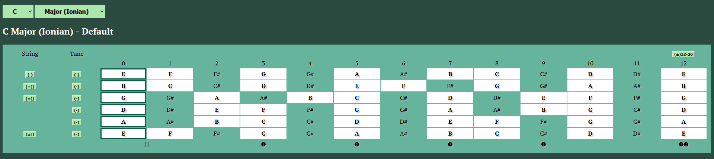

Goal: A visual tool for fret based instruments like guitars and pianos to help musicians:
- Collaborate in harmony playing in the same scale or key on two or more instruments
- Write new music compositions or productions with chords progressions, melodies, and licks
- Improvise solos in the same keys as songs, soundtracks, or newly written riffs
Main UI: the focus of the page is on a fret board of an instrument being played.
- The default view is of the C Major scale, a popular key used in Western music. Drop down menus provide options to select different root notes and scales.
- A piano keyboard option can be selected.
- The notes to be played are highlighted white (black for the black keys on a keyboard). The notes to be avoided match a background color.
- The guitar fretboard is customizable: strings can be removed or added, frets can be added, each string can be tuned.
- A scale filter option can be used as a lookup tool to find a scale that matches any notes selected.
